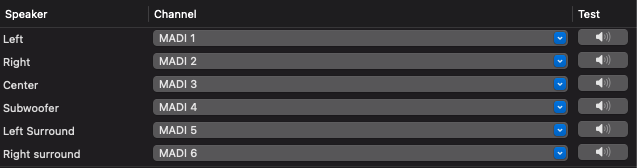
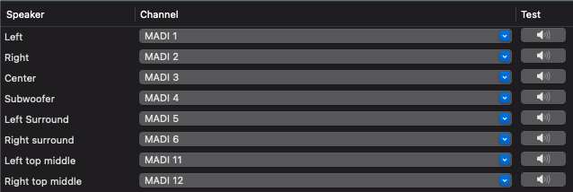
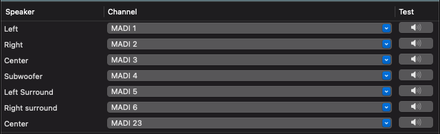
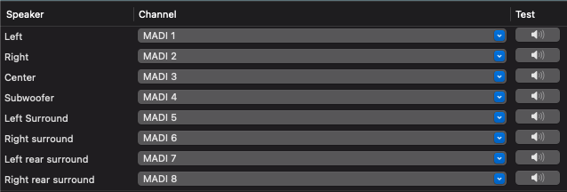
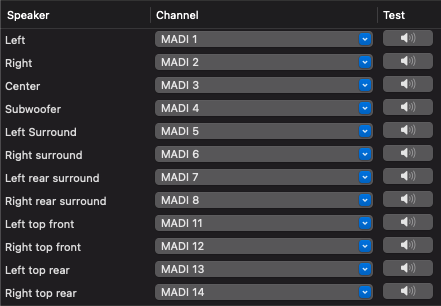

System Audio Playback
Apple Music and Surround Content
- In the Sound settings, select MADIFace.
- Go to Applications > Utilities > Audio MIDI Setup.
- Click on MADIFace on the left, then click Configure Speakers at the bottom right.
- Under the Configuration tab, pick the surround format that suits your media.
Note: Apple Music automatically adapts its Atmos channels to your chosen format. For example, if you select 5.1, it will output a 5.1 mix; if you select 7.1.2, it will output a 7.1.2 mix.
- In the bottom half of the window, ensure the speakers are routed correctly.
Click your format below to see the correct channel configurations:




